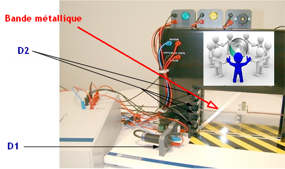

|
ACTIVITE 3 |
3) : Identifier sur le système Zeliocoulis(*) ce que détectent les capteurs D1 et D2 ? (un objet, une personne, une position, etc)
Compléter sur votre document réponse
(*) Si le système Zeliocoulis n'est pas disponible, il est possible d'utiliser un autre système ou de faire l'activité à partir des documents techniques et des références indiquées dans le tableau en 6)
4) Indiquer la famille à laquelle ils appartiennent : inductif, capacitif, photoélectrique ou interrupteur de position
Compléter sur votre document réponse
5) En utilisant les capteurs (ou en devinant avec la documentation) en votre possession, faire des essais de détection pour les 2 capteurs et vérifier le type de matériaux détecté
Compléter sur votre document réponse
6) Indiquer pour chaque capteur les caractéristiques techniques, à l'aide des documents techniques (prendre les références indiquées dans le tableau)
Compléter sur votre document réponse
7) Dessiner au dos un schéma de câblage d'un capteur 2 fils et d'un capteur 3 fils (voir documents techniques ou TP précédents)
Compléter sur votre document réponse
8) Qu'est-ce qui se passe si on remplace le réflecteur de D1 par un simple miroir ?
Compléter sur votre document réponse
Créé avec HelpNDoc Personal Edition: Créer des documents d'aide HTML facilement